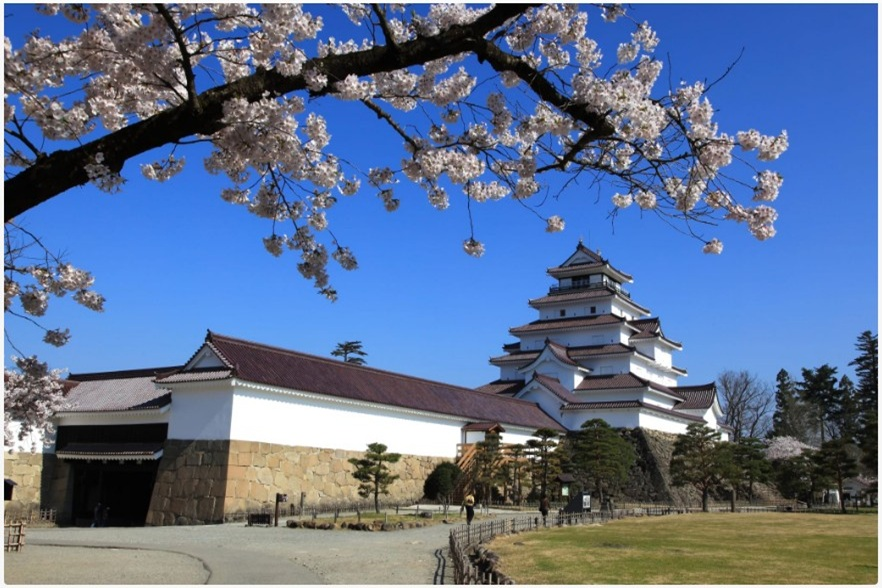
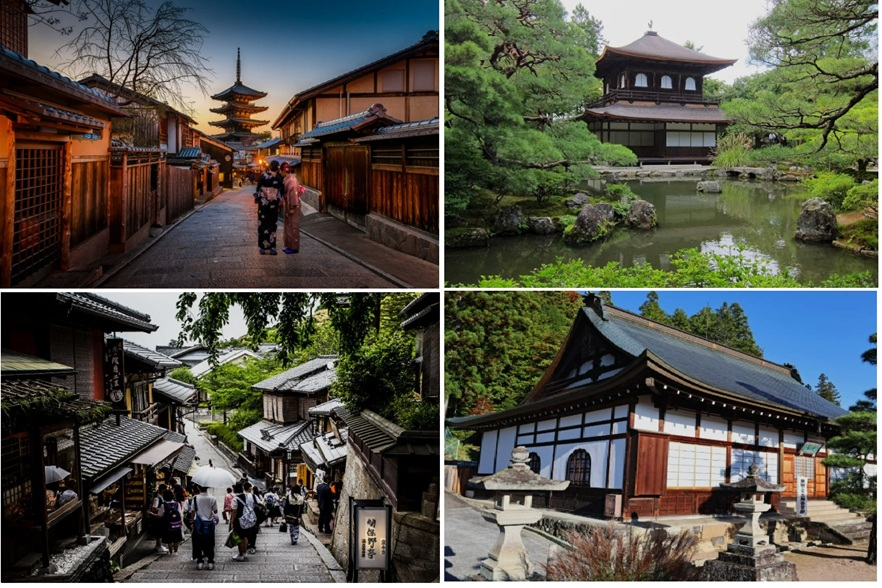
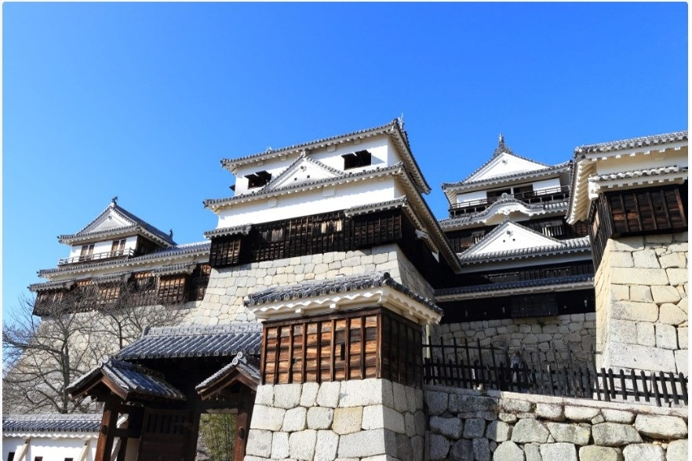

Enclaves de relevancia histórica
En la era samurái, varios castillos se convirtieron en centros de poder político, militar y cultural:
Castillo de Tsuruga 東郷城 ⬆

Ubicación: Prefectura de Fukui, región Hokuriku
Servía como fortaleza defensiva frente a los invasores del norte. Su posición estratégica controlaba el paso por la llanura de Kaga y era sede de importantes clanes samurái que protegían las rutas comerciales entre Osaka y Kyoto.
Representa la resistencia samurái durante los conflictos del final del periodo feudal. Era una fortaleza estratégica y símbolo de lealtad y defensa, muy vinculada a las guerras internas del país.
Cómo llegar
Al Castillo Tsuruga se puede llegar en autobús, bicicleta o a pie desde la estación de Aizu-Wakamatsu. Desde Tokio, toma el tren bala JR Tohoku hasta Koriyama y, después, haz transbordo hasta la estación de Aizu-Wakamatsu. Desde allí, puedes ir caminando o en bici hasta el castillo, o tomar el autobús hasta la parada Tsurugajo Kitaguchi.
Horarios y precios en 2026
El Castillo de Tsuruga (Aizu-Wakamatsu) abre diariamente de 8:30 a 17:00 (con última entrada a las 16:30). El parque que rodea el castillo está abierto las 24 horas y es de acceso gratuito, ideal para ver cerezos en flor en abril. El coste de entrada al torreón suele ser de unos 410 yenes.
Zona de Higashiyama 東山城 ⬆

Ubicación: Prefectura de Kyoto
Más que un castillo concreto, es una zona histórica de Kioto asociada al poder cultural y político. Durante el Japón feudal, reflejaba el refinamiento de la élite gobernante, combinando funciones defensivas con desarrollo cultural.
Cómo llegar
Gion y Higashiyama abarcan una zona amplia que ahora es el corazón de Kioto . Se accede fácilmente en transporte público. Dentro del distrito, la mayoría de los sitios están a poca distancia a pie.
Desde la estación de Kioto, toma el autobús 5 o 100 para llegar al Pabellón de Plata (Templo Ginkakuji) y al extremo norte del Camino de la Filosofía. Este trayecto dura unos 40 minutos. Toma los autobuses 100 y 206 en dirección a Kiyomizu-michi, la parada más cercana al templo Kiyomizu-dera . Este trayecto dura unos 20 minutos.
Las estaciones de Gion-Shijo y Kiyomizu-Gojo, en la línea de Keihan, ofrecen fácil acceso a las calles Shijo y Gojo. Llegarás a Gion y Kiyomizu caminando 15 minutos hacia el este por estas calles.
Horarios y precios en 2026
La zona histórica de Higashiyama en Kioto está abierta al público las 24 horas, pero la mayoría de sus tiendas y restaurantes tradicionales abren entre las 9:00 y las 10:00 y cierran entre las 17:00 y las 18:00. Los templos principales de la zona suelen cerrar sobre las 16:30 o 17:00.
Calles históricas (Sannenzaka/Ninenzaka): Accesibles libremente, pero con mayor actividad comercial durante el día. Templos (ej. Kiyomizu-dera): Generalmente abren temprano, a menudo desde las 6:00 o 8:00, y cierran a las 17:00-18:00 (el cierre puede variar según la temporada).
Gion/Distritos de Geishas: Se pueden visitar a cualquier hora, siendo especialmente fotogénicos al atardecer. Se recomienda visitar la zona temprano por la mañana para evitar las multitudes de turistas.
Castillo de Matsuyama 松山城 ⬆

Ubicación: Prefectura de Ehime, isla de Shikoku
Fundado por el clán Chōsokabe, se erigió como bastión contra los invasores del norte de Shikoku y más tarde fue la base de poder de los daimyō Tokugawa antes de su traslado a Edo. Su arquitectura combinaba técnicas de defensa tradicional con influencias marítimas, reflejando la economía local basada en la pesca y el comercio marítimo.
Ejemplo destacado de castillo feudal en altura, construido para dominar el territorio circundante. Estas fortalezas en colinas permitían mejor vigilancia y defensa, siendo esenciales en una época de constantes conflictos.
Cómo llegar
Puedes llegar al castillo en tren y luego seguir a pie, en tranvía o en funicular. El castillo se alza sobre el monte Katsuyama, y se puede llegar a él en teleférico, telesilla o a pie.
Desde la parada de tranvía de Okaido se tarda unos 5 minutos a pie. Para llegar a la parada de tranvía de Okaido, toma la línea de tranvía número 5 desde la estación de JR Matsuyama.
Desde la estación de Matsuyama City, toma la línea de tranvía número 2 o 3, y luego el telesilla o el funicular hasta la cima de la montaña.
Otra opción es caminar desde el Jardín Histórico de Ninomaru o desde el parque de Shiroyama al pie de la montaña y dar un agradable paseo de 15 minutos.
Horarios y precios en 2026
El Castillo de Matsuyama abre generalmente de 9:00 a 17:30 (cerrando a las 17:00 en invierno), con la última entrada 30 minutos antes del cierre. El acceso al recinto del parque es libre, pero la entrada al castillo cuesta unos 520 yenes. El teleférico/telesilla funciona habitualmente de 8:30 a 17:30.
Detalles Importantes:
Horarios por temporada: Los horarios de cierre pueden variar según la estación, siendo más tempranos en los meses de invierno (noviembre a febrero suele ser hasta las 17:00).
Acceso: No se permiten vehículos en el sendero superior. Teleférico/Telesilla: Se paga por separado y es la forma más común de subir, operando desde la estación de Shinonome-guchi. Entrada: Aproximadamente 520 yenes para adultos.
Estos castillos ilustran cómo las estructuras defensivas se adaptaron a necesidades cambiantes: control territorial, poder político y protección económica, siendo pilares del sistema feudal japonés.